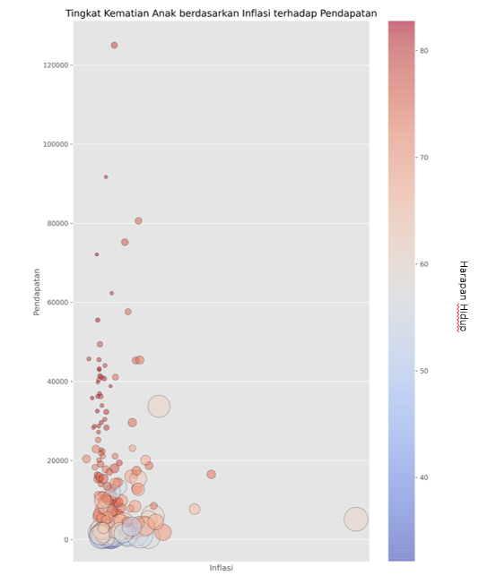
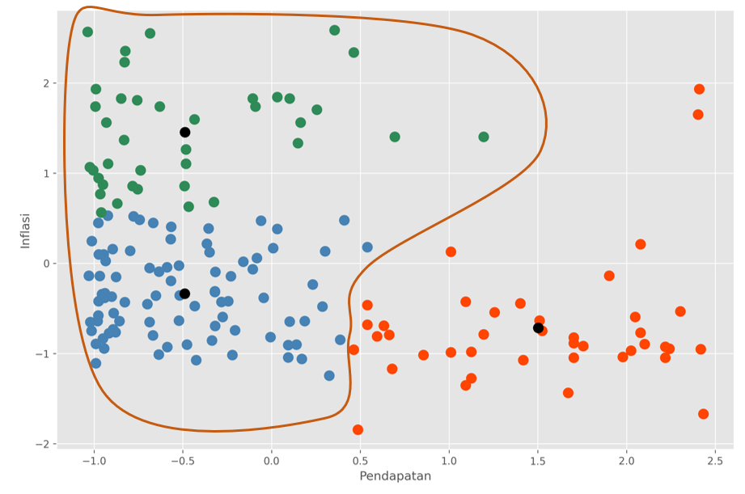
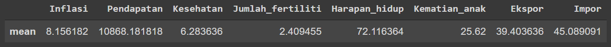

Aiding "HELP International" in Determining Countries
HELP International is an international humanitarian NGO committed to fighting poverty and providing basic facilities and assistance to people in underdeveloped countries during disasters and natural disasters.
March 5, 2022

Problems
HELP International has raised approximately $10 million. HELP's CEO need to decide how to use this fund strategically and effectively. Therefore, there is a need to determine which countries that need the most help, based on socio-economic level.
Features
Negara: Name of the countries
Kematian_anak: Numbers of children under 5 y.o. death per 1000 births
Ekspor: Exported goods per capita
Kesehatan: Health expenses per capita
Impor: Imported goods per capita
Pendapatan: Net income per person
Inflasi: Measurement of annual total GDP growth
Harapan_hidup: Average amount of birth with the same death pattern
Jumlah_fertiliti: Number of child that will be born with the same fertility pattern
GDPperkapita: GDP per capita, calculated from GDP total / total population
Download Dataset
Analysis
Based on the informations above, it is shown that there are several features from this data and we need to determine the relational matrix by using multivariate analysis such as below
Built on initial multivariate analysis, we could eliminate and determine which variables are related. By doing so, we could plot basic scatterplot as well to see how is the distribution of such data using those variables.
Child Death Rate (size of the circle) based on Inflation against Earning and Life Expectancy(hue)
The initial graph above show us that when looking at inflation level only, the lower inflation level is, the more likely that the income of one country can make is higher due to the fact that the price of living and goods are more valuable.
However, based on income, we could see that there is a higher portion of child death (circle size) with low life expectancy (hue) at the low income group.
In order to further understand and provide a workable concept, we could plot a hierarchy centered from segmented multivariate analysis.
According to the hierarchy above, it is clear that earning(Pendapatan) effect and effected by inflation (Inflasi), thus, both of those variables are chosen for making clustering model. In this opportunity, K-Means Clustering is used due to the fact that the labeling of one countries' category is not yet clear, making unsupervised model more appealing.

Overall, there are two major groups of clustering, which is the higher income and lower income. For the lower income itself, it is divided again into two sub-clusters. To further understand why such sub-clusters are created, we can learn from the mean of each variables.

Mean from Lower Income Group

Mean from Mid Income Group

Mean from High Income Group
I would like to point out the fact there are three key variables that contribute to the creation of sub-clusters according to the analysis above. Firstly, there are a slight differences between two groups in fertility rate, where it is a bit higher in lower group. Secondly, life expectancy from lower group is much lower compare to the mid group (in fact, the mid group life expectancy is more resemble that of a higher group). And finally, expenses in healthcare. Although lower group has more percentage (though not that much differences) from the mid group.
From here on, we could see what problem that lower group country is facing, that is the lower life expectancy that is not in balance with the fertility rate. This is caused by the lack of funding in the healthcare sector, and so I would like to propose the idea of aiding in such sector for the countries with lower income that is less than 1000 because, based on previous analysis, we conclude that the lowest income has the potential in a decrease in human resources, therefore, the countries that I would to suggest is: